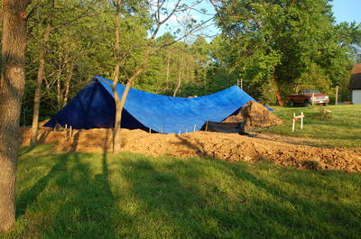

Home
About VSI
What We Do
Who We Are
Contact Info
Resources
Blog
Data Archives Export
Tower Construction
Tower Excavation and Rod-busting
Groundbreaking
The backhoe excavation was done Sunday May 15 by Mike Rhoderick. He arrived at 08:30 and five hours later we had a big hole in the ground:

With the concrete costing $144 a yard we had an incentive to dig the hole as accurately as possible, and Mike did an amazing job. The bottom was level to within 6" and we were within 6" on the side-to-side dimensions, only having to trim off a few inches from the sides and bottoms of two corners by hand later. We would have been even closer if I'd had a helper to hold the surveying rod and end of a tape measure. In hindsight I wish I'd had Mike dig the hole a little oversized as hacking a couple dozen wheelbarrow loads of that heavy clay/shale soil by hand ending up consuming a full man-day or so of labor; while I was down in that hole hacking away I would gladly have paid for a few extra yards of concrete.
Monday was devoted to hand digging to remove loose material and hack out the few spots that weren't quite deep or wide enough. A neighbor, Steve Poteat, made good on his earlier volunteered promise to give me a hand, and he showed up to dig with me all day. We hit some very hard pockets of shale that a SDS Max rotary hammer and a pick had a hard time breaking up. I'm glad Mike was able to able to dig so accurately because removing just those few inches was hard going, taking most of the day.
The photo of Steve Poteat also shows the transit and surveyors rod we used to map the height of the bottom of the excavation. Later I'll switch to a laser line level down in the hole (you can see the top of the tripod just above the edge of the hole next to Steve's shovel).
Steve is planning to erect a similar tower on his property on the far side of Sugarloaf Mountain and is getting a hands-on look at what that involves. His tower will be shorter than mine and so correspondingly less expensive and difficult.
The weather has not been favorable. Significant rain or thunderstorms could collapse the walls of the excavation. Once the rebar is placed and tied in the bottom of the hole that could be a major disaster, because there will be only 8" spacing between the grids of the two layers of #7 rebar. Picking up muddy shale through that would be a pain. With major rainfall (1.9" accumulation in two days) forecast for the weekend, I decided to hold off on placing the rebar until we have a forecast of four rain-free days (one for placing the rebar, one for inspection, one for the pour and at least a half day for the concrete to set up).
The concrete will be a "self-consolidating" mix with impressive specifications (cured strength of over 9,000 psi!). No vibration is needed (nor recommended), so once the rebar is in place and inspected we need only pour in the concrete. The nominal quantity of concrete needed for the first pour of the mat is 19 cubic yards, but the irregularities in the excavation and the use of 4x8x16 CMU block for the "chairs" means the actual amount will be closer to 21 or 22 yards.
 With heavy rain in the forecast my brother and I rigged a huge (40'x60') tarp over the excavation, using two trees to support the ridgeline rope and a pickup truck as an adjustable anchor for one end. Rigging it so pockets of water didn't collect in sagging areas of the tarp was quite a challenge.
My brother woke up at 3 AM Saturday morning and spent the next three hours bailing out the multiple pockets of rainwater that we threatening to pull down or destroy the tarp. Then he and I spent a wet and muddy hour or so fiddling around with improvised objects (stepladder, empty trash can, etc.) to tweak the tarp placement so water wouldn't collect on the tarp. The result was precarious but was holding as of mid-day Saturday.
 While waiting for the predicted deluge we decided to take a chance on the tarp holding well enough to
prevent collapse of the walls of the excavation. One advantage of the tarp was that we were working
in the shade and could see the laser level more clearly.
While waiting for the predicted deluge we decided to take a chance on the tarp holding well enough to
prevent collapse of the walls of the excavation. One advantage of the tarp was that we were working
in the shade and could see the laser level more clearly.
A check of the dimensions and squareness of the excavation with laser level and stringlines from corner stakes showed we had to hand-dig about a dozen wheelbarrow loads in several places on the sides and bottom. When done the excavation was a full 18'-6" (5.6m) in each direction and square to under an inch (as measured across the diagonals; higher precision than one would normally strive for. We placed the 4x8x16 CMU (concrete block) that served as "chairs" to hold the bottom layer of rebar the required minimum 3" above the dirt. A laser line level and crusher run was used to get all the block in the same level plane to an accuracy of about 1/2". Then we started laying the rebar, using spacers made of scrap lumber to maintain the 9" spacing between pieces of rebar.
|
This site Copyright © 2002-2016 VSI. |